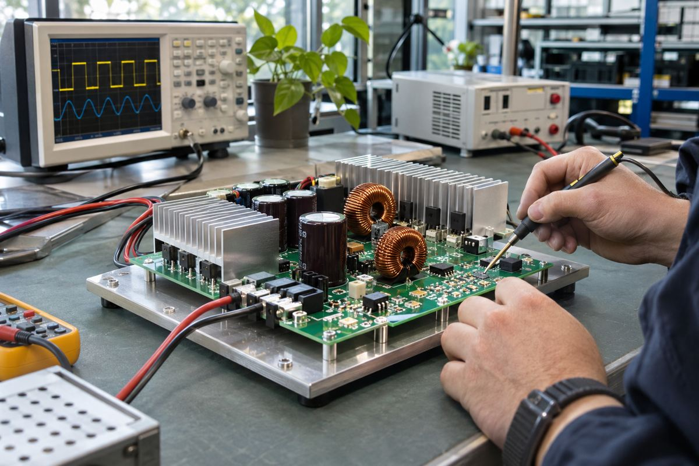

Electronics / EXPLAINED
Vishay to show a 1.6 kW server power design converting 400 V to 50 V
The November 9 preview also lists an 800 V converter design and a short-duration rack power support circuit.

Component maker Vishay announced its Munich electronica server power demonstrations on November 9. One design converts a 400 V DC distribution bus to a 50 V intermediate bus at 1.6 kW, using 650 V gallium nitride switching devices. November 9 was the announcement. The show runs November 10–13 local time. The announcement gives no sales date for a server or kit incorporating the design.
Vishay makes discrete semiconductors and passive components such as resistors and capacitors. The exhibits are reference designs showing how components can work together in a power system. DC/DC means both input and output are direct current. A distribution bus is a common voltage path feeding multiple circuits. An intermediate 50 V bus can feed another conversion stage before power reaches a processor core.
Calculating current through a conversion stage
If 1.6 kW is delivered at 50 V, power divided by voltage gives approximately 32 A. Ignoring losses, the 400 V side would draw 4 A. The arithmetic illustrates how a higher distribution voltage reduces current for a given power. Real converters have losses, heat and protection constraints. The 650 V device rating is distinct from the example’s 400 V input and 50 V output.
A separate 12 kW design takes an 800 V input and outputs one-sixteenth of that voltage, which works out to 50 V. Its input and power rating differ from the 1.6 kW design. Equipment selection requires considering loads, conductors, protection and cooling. Vishay also lists an electric double-layer capacitor design supporting a 48–50 V bus during short disturbances and peaks.
For equipment designers, the exhibition provides concrete examples of where to convert power in a rack. In our analysis, comparing efficiency requires matching load percentage and temperature and accounting for cooling power. A nominal rating alone cannot establish savings in operating costs or application performance.
For power interruptions, duration matters as well as voltage. Supporting a bus through a brief disturbance and running a rack through an extended outage impose different requirements. Vishay describes short-duration support without specifying the combination of load and runtime.
The announcement provides no load-dependent efficiency curves, cooling conditions or deployed-server results for these designs. Installation would still require design verification and safety testing. Engineers can look for circuit documentation, test conditions and orderable component lists following the demonstrations.